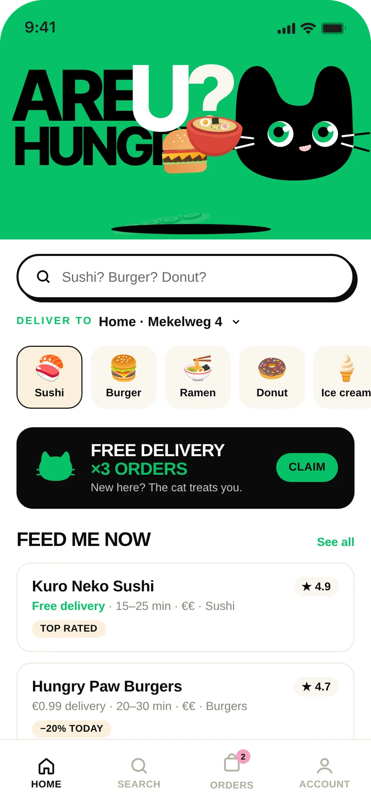
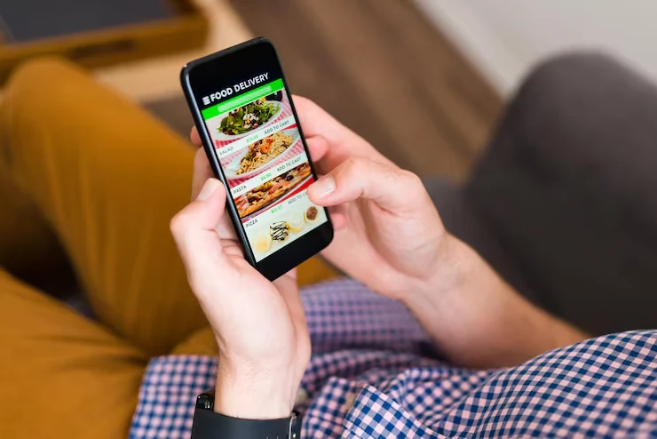
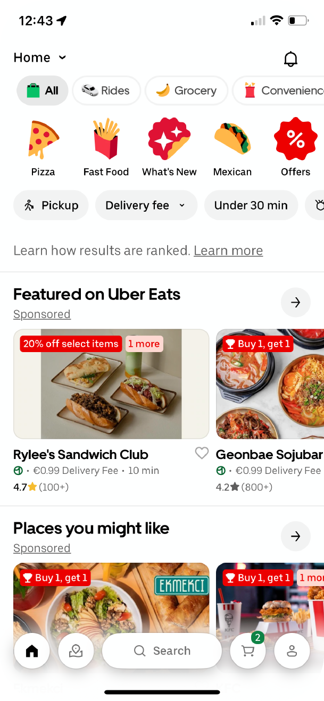
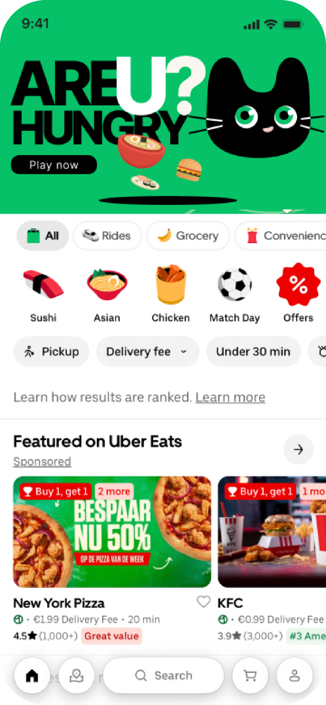
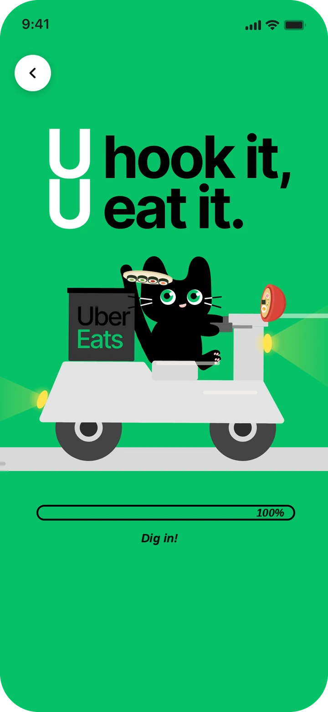
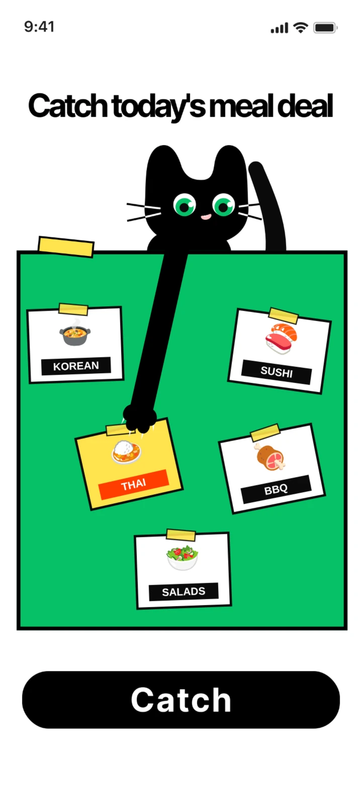
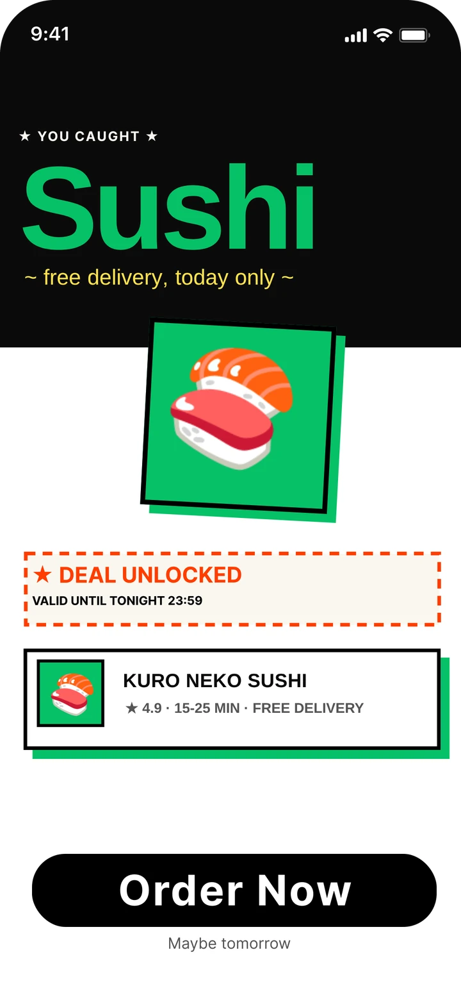
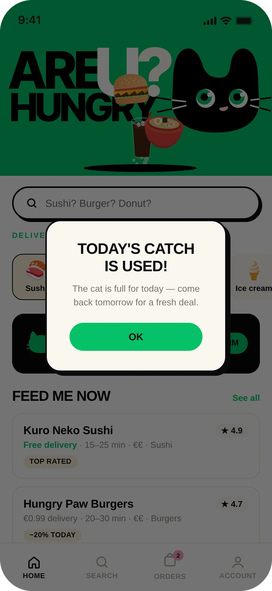

FoodMiner.
An AI shortcut inside Uber Eats for the moment you're hungry but can't decide. AI narrows the choice to six picks, you catch one, and a deal takes you straight to checkout.
- My role
- Journey analysis, AI product mechanism, information architecture & high-fidelity prototype
- Context
- Hack4Her 2026, Uber Eats challenge
- Team
- 3 people: two interaction designers and one engineer
- Outcome
- Top 3 of the challenge

Summary
People open Uber Eats ready to order, then lose momentum scrolling and comparing. Too many good options become decision fatigue.
Let AI take on the low-value filtering, so people only make the final choice.
AI builds a pool of six personal picks. You catch one, a deal unlocks, and you go to the order.
Top 3 at Hack4Her. Built around two targets: less time to decide, more intent to order.
What I did
3 contributionsUser journey & AI opportunity
Mapped the whole path from opening Uber Eats to placing an order, found where people loop in Explore and Compare, and redefined the opportunity as letting AI do the filtering.
ProblemRecommendation mechanism & loop
Designed how AI enters the decision: order history, preferences and restaurant data produce six personal picks, inside a compute, choose, reward loop that keeps the user in control.
MechanismMVP prototype & validation
Owned the information architecture, interaction flow and high-fidelity prototype, framed the value hypotheses, and tested them in the Hackathon demo.
Prototype
React 19TypeScriptViteLottiePythonFastAPIPydanticSQLiteAWS AmplifyECS Fargate
Hunger wasn't the problem. Choosing was.
People open Uber Eats already wanting to eat. Somewhere between the first scroll and checkout, that intent turns into doubt.
I mapped the full decision path in Uber Eats, from opening the app to placing an order. The friction didn't sit at checkout. It sat earlier, in Explore and Compare: scrolling past the same restaurants, weighing price against taste against delivery time, then going back to options already seen.
More options didn't make people more confident. They added small decisions before the one that mattered. For Uber Eats, that hesitation means long sessions that end without an order.
Uber's challenge: design a playful feature that helps people decide what to eat next, and unlocks a personalised deal when they do.
Three frictions in Explore and Compare
From the journey map- Repeated browsing
The same restaurants come round again and again while scrolling, without bringing the decision any closer.
- Information overload
Every card carries price, fee, rating, time and promo. Each is useful on its own; together they slow people down.
- Hard to commit
With many acceptable options, choosing one means giving up the others, so people keep checking instead.

Reduce decision debt before it becomes drop-off.
- Filter repetition
Let AI absorb broad exploration and comparison.
- Protect judgment
Keep appetite and intuition in the user's hands.
- Reconnect to checkout
Turn a confident choice into a clear next action.
Let AI do the filtering. Leave the choice to people.
The opportunity wasn't to let AI order for you. It was to take away the tiring part of choosing and keep the part that is yours.
I split the decision into three jobs: exploring what's available, comparing the good candidates, and picking one. The first two are broad and repetitive, which suits a machine. The third depends on appetite and mood in that moment, which only the person knows.
Who does what
Design principleAI owns the breadth
Reading order history and preferences, checking restaurants, price and delivery, and cutting hundreds of options down to six.
You own the commitment
Choosing between six options that all fit, on appetite and mood. The final tap is always yours.
The flow, rebuilt
Product definitionBrowse, compare, go back, compare again, then choose. All by hand.
AI screens the options. You make one decision.
Six picks, one catch, one reward.
Food Miner turns a recommendation into a short loop: the system computes, the person chooses, and a reward confirms the choice.
Choosing is an action, not a scroll. A cat's arm swings over the pool and you tap to catch the card you want. The system has already done the filtering, so the catch is a real choice between good options.
- 1
AI computes
Order history, preferences and restaurant data are scored into a pool of six picks for this person.
- 2
You choose
One tap catches one card. The system never makes the final pick for you.
- 3
Reward
A deal unlocks for tonight and carries the choice straight to the order.
Each catch and order feeds back into the next pool.
How the six are scored
Weighting in the Hackathon build- 45%Order history
Cuisines, dishes and price ranges you keep coming back to.
- 20%Campaign fit
Offers currently running that match the pick.
- 15%Restaurant need
Restaurants that want orders now, so the deal helps both sides.
- 10%Price fit
Close to what you usually spend.
- 10%Delivery fit
Open, nearby and quick enough right now.
Two rules that keep it useful
Pool and pacing- PoolFamiliar plus discovery
Half the pool is food you already like and half is close to it but new. Relevant without repeating last week's order.
- PacingOne catch a day
After a catch the game closes until tomorrow. It stays a shortcut to dinner, not a slot machine to keep pulling.
Built into the Uber Eats home screen, not added beside it.
People already start from the home screen, so that's where Food Miner lives: a new first step, not a new place to learn.
Home entry AI screening Catch Deal Order
Where it sits
Information architecture

Try it here
This is the prototype we demoed at Hack4Her. Tap the green banner, wait for the dig, then tap Catch when the arm is over the card you want.
- EnterTap “Are U hungry?” on the home screen
- ScreenAI digs through the options
- ChooseCatch one card
- RewardYour deal, ready to order
Enter
From the home screen to a ready pool in a few seconds.

Choose
The only decision left for the user.

Reward
A clear next step, and a clear end.


How it was built
Working MVPFront end
React 19, TypeScript and Vite, with Lottie for the dig and catch animations. Deployed on AWS Amplify.
Back end
Python and FastAPI with Pydantic models and SQLite, running on ECS Fargate. It scores the options and returns the six-pick pool.
Test the value before the model.
Placed in the top three with a working demo, judged on originality, UX, personalisation logic, execution and pitch.
Before building a better model, the demo had to answer a product question: does a short, AI-curated choice feel faster, while still feeling like your own decision?
I wrote the value down as three hypotheses, each with what the demo could show and what we would measure in a real test.
Value hypotheses
Core metricsExplore and Compare fold into one pool of six.
Time from app open to first committed choice
A deal turns the pick into a clear next step.
Entry to checkout conversion
AI proposes; the person still makes the catch.
Perceived control after choosing
What I'd test next
Next iteration- Is six the right number?
Compare pools of four, six and eight across different levels of hunger and dietary needs.
- Show why a pick appeared
A short reason on each card, so people can understand and adjust the recommendation.
- Against the normal flow
An A/B test of Food Miner against browsing, on decision time and order completion.
Hackathon demo with mock data · results are directional, not a live experiment